A CANdela document (*.cdd file) describes the communication of a test system with an ECU module. CANdelaStudio presents the CANdela document for editing, other tools use the CANdela document to generate ECU source code or to parameterize the communication of a test system with the ECU.
This application note describes how CANdelaStudio and tools that process CANdela documents map data objects in the CANdela data model and positions in the communication data stream, including the use of byte-order (high-low "Motorola" vs. low-high "Intel") and bit-order ("MSB" most significant bit first vs. "LSB" least significant bit first).
CANdelaStudio provides a graphical view of the communication data stream which visualizes the positions of the data objects (not the positions of individual bytes within a multi-byte data object).
[POS-D010] A Bit Sequence is one linear sequence of bits. The order of bits is relevant
Examples:
Visualization:
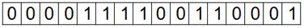
[POS-D020] In a Byte Sequence, bits are grouped in bytes. The order of bytes is independent from the order of bits.
Examples:
Visualization:
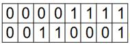
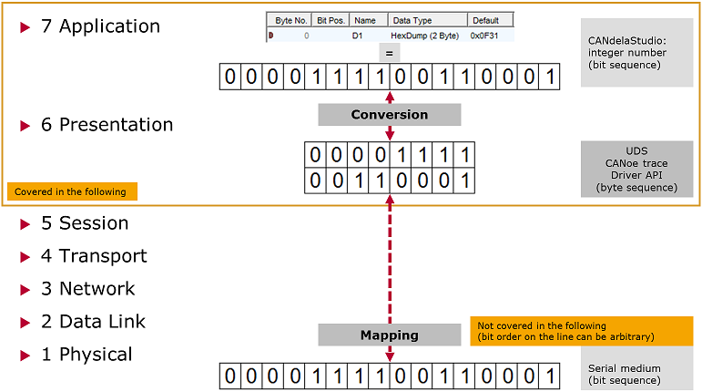
Relation with OSI Layers
In the CANdelaStudio application (layer 7), you specify a numeric value as an integer number, e.g. the constant value for a “HexDump (2 Byte)” data type. The integer number is equivalent to a bit sequence.
When the number is transported over a communication line, it must be converted to a byte sequence e.g. at a driver API (layer 6).
These two representations (bit sequence and byte sequence) are covered in the following.
Note: On the physical layer of a serial medium, the numeric value also takes the form of a bit sequence. The order of bits in this representation depends on the serial medium; it need not correspond with the order of bits shown in the application and is not covered here.
Note: The Open Systems Interconnection model (OSI) is a conceptual model that characterizes and standardizes the internal functions of a communication system by partitioning it into abstraction layers.
To map data objects shown in the user interface to positions in the communication data stream, a data object must be mapped to a byte sequence. There are two kinds of such mappings:
[POS-R100] To map (convert) a single value between the representation as a bit sequence (see chapter Bit Sequence) and as a byte sequence (see chapter Byte Sequence), a byte Order is applied. This holds for
Applying byte order:
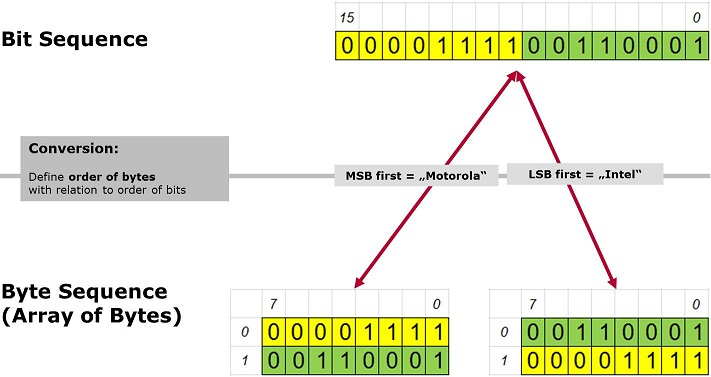
Applying Byte Order
“Most significant” means the highest order of magnitude (i.e. what is written left in the place-value system).
In the CANdela data model, the byte order of a data object is specified in the data type associated with the data object. The CANdelaStudio data type properties dialog shows the byte order:
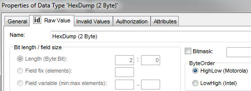
Byte Order in CANdelaStudio Data Type Dialog
Motivation:
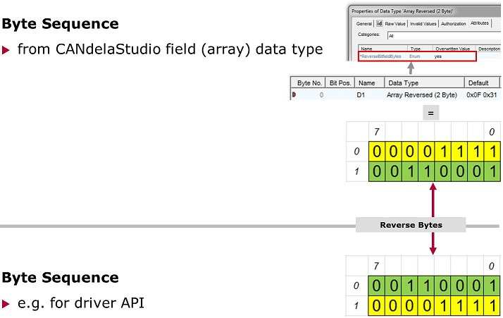
Reverse Bitfield Bytes for Array Data Type
[POS-R110] CANdelaStudio supports Reverse of bytes for...
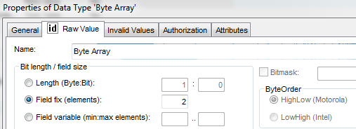
Data Type Dialog with Array Data Type
You can set the attribute in the “Attributes” page of the CANdelaStudio data type dialog:
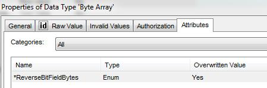
Attributes Page with Attribute ReverseBitFieldBytes
The attribute can be defined in the CANdela template, see attribute "ReverseBitFieldBytes" (CDS-18374 7.1).
Note: only CANdelaStudio Admin edition supports defining attributes.
[POS-R200] CANdela data objects on top-level in a service or in a complex data type must be byte-sized and start at a byte position.
For bit-sized objects or objects starting at a bit-position, see chapter Bit Positions.
For a visualization of the positions in CANdelaStudio, see chapter Display.
[POS-R210] For a data type that specifies a single value on top-level (not within a bitfield), the byte-order defined at the data type specifies the positions of the individual bytes (as described above in [POS-R100]).
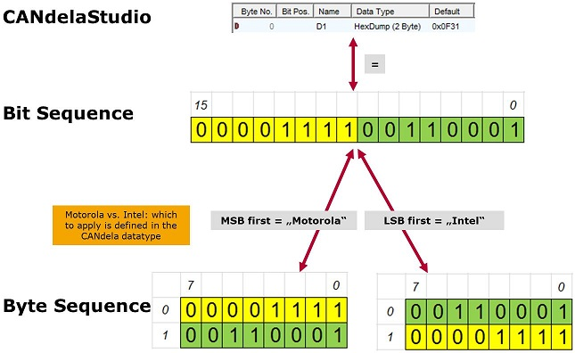
Byte Positions for a Single Value
For instance, CANdelaStudio may show a 2-byte value as “0x0F31”. With “Motorola” byte-order specified at the data type, at the driver API, the first byte (position 0) will be “0x31”, the second byte (position 1) will be “0x0F”.
[POS-R220] For a data type that specifies an array on top-level (not within a bitfield), an attribute at the data type optionally defines that the positions of the individual byte elements shall be reversed (as described above in [POS-R110]).
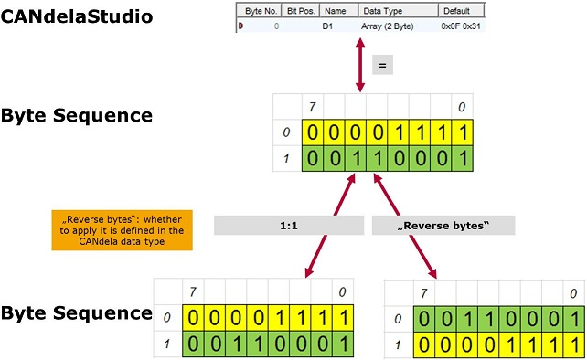
Byte Positions for an Array
For a visualization of the positions in CANdelaStudio, see chapter Display.
[POS-R230] For any data object within a bitfield, the bitfield defines a “frame” for the position of the data object.
Note: In CANdela, a data object that is bit-sized (i.e. where bit-size is not multiple of 8) or that does not start at a byte position must be placed into a bitfield. A bitfield can contain multiple data objects.
CANdelaStudio shows all data objects within a bitfield in a “logical” order with consecutive bit positions.
Note: While both the bitfield and the data object within a bitfield reference a data type, CANdela uses only the byte-order (or “reverse bytes” setting) of the bitfield’s data type. The data types of the data objects within the bitfield are ignored for the mapping.
The mapping between the bitfield and a byte array can be described conceptually in two steps:
In Step 1, the first data object (= the one with the lowest “logical” position) is placed at the least significant bit position in the bit sequence (motivation: a data object shown with “logical” position 0 is placed at bit position 0 in the bit sequence).
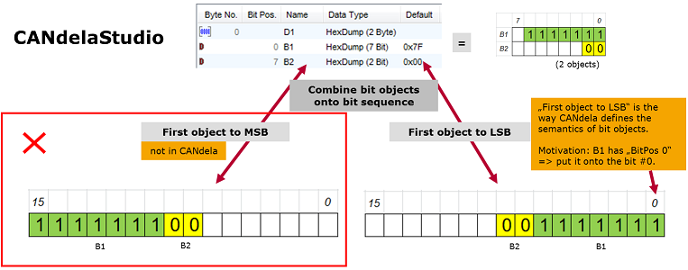
First Object to LSB
Note: There is no setting in CANdela which would place the first data object at the most significant bit position in step 1 – to achieve this, you would have to re-order the data objects (i.e. put the first object last).
Step 2 applying byte-order works as described in chapter 4.1 above:
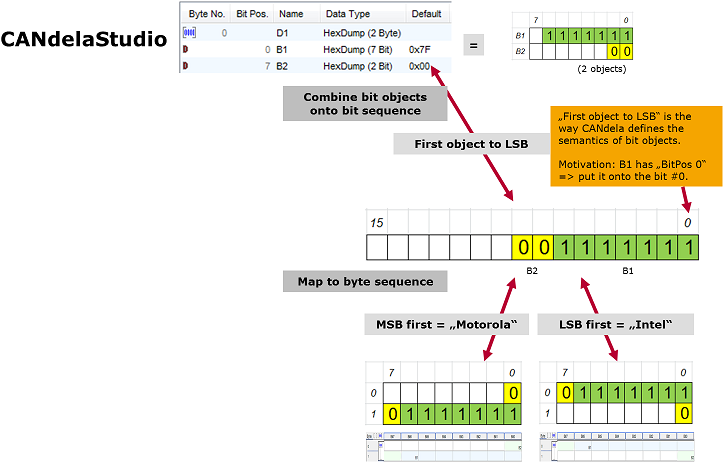
First Object to LSB with Byte Order
[POS-R230-Array] A bitfield may refer to a data type that specifies a field of 1- or 2-byte values.
Step 1 (mapping of data objects to a bit sequence) is identical to that for a single value within a bitfield (described in chapter 5.1 above).
Step 2 (mapping of the bit sequence to a byte array) there are two data constellations:
a) [POS-R230-Array1] elements of size 1:
The byte order property of the data type is not applied.
As a default, the MSB is put first, like for “Motorola” byte order.
[POS-R230-Array1Rev] With the “reverse bytes” attribute set, the order of all bytes is reversed (as described in chapter 3.2), like for “Intel” byte order:
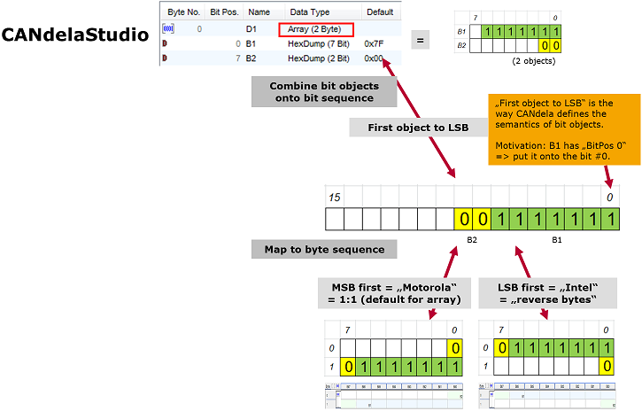
Array with Bit Objects
b) [POS-R230-Array2] elements of size 2 (i.e. a “Unicode string” - each field element is a 2-byte Unicode character):
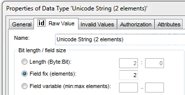
Data Type Dialog with Unicode String
Note: This is a very special data constellation, which should be avoided!
[POS-R230-Array2NoRev] “Reverse bytes” is not supported for Unicode fields.
[POS-R230-Motorola] For “Motorola” byte order at the Unicode field data type,
[POS-R230-Intel] For “Intel” byte order at the Unicode field data type,
the MSB of the entire bit sequence is put first (i.e. “Motorola” byte order is applied to the bit sequence),
the bytes in each Unicode character (2 bytes each) are reversed (like applying “Intel” byte to each element).
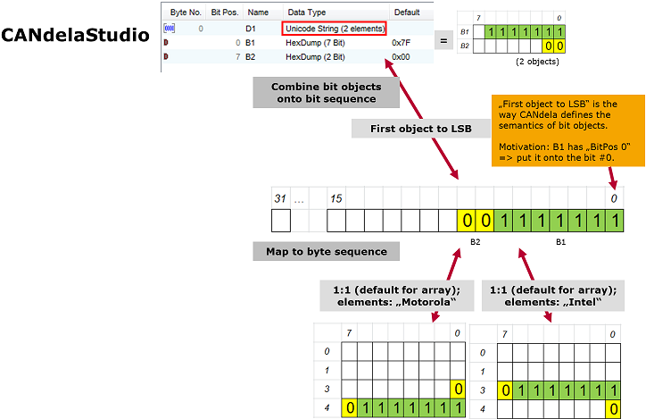
First Object to LSB with Unicode String
CANdelaStudio visualizes the positions of data objects in a graphical view:
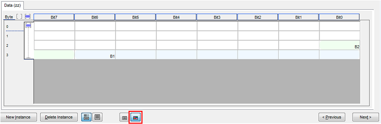
CANdelaStudio Graphical Telegram Table
To switch to graphical view, use the colored button at the bottom of the data objects list [DOUIG-R020].
[POS-R300] Graphical view shows data objects as transported over the line, therefore the document option "Bit Ordering" described in the next chapter does not apply to graphical view (cf. CDS-69433 9.1).
[POS-R310] The following is controlled by the document option "Bit Ordering".
The variation applies to the list view only, not to the graphical view (see previous chapter).
[POS-R310-0Top] As a default, CANdelaStudio shows “logical” bit position 0 on top in a bitfield:
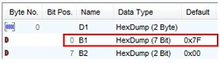
Bitfield with Bit 0 on Top
[POS-R310-0Bottom] As an alternative, CANdelaStudio can show “logical” bit position 0 at the bottom in a bitfield:
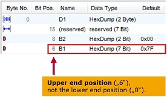
Bitfield with Bit 0 at the Bottom
The position shown is the end position of a data object (like “6”, for the first object, 7-bit sized), not the start position (like “0”).
[POS-R320] If the data objects within a bitfield do not completely fill the bitfield, CANdela assumes an implicit reserved object (gap) at the end of the bitfield.
While this reserved object is not shown when bit position 0 is on top, it must be shown when bit position 0 is at the bottom.
Example: in order to describe the same data on the line, a reserved data object must explicitly describe the reserved 7 bits:
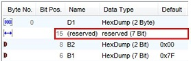
Bitfield with Bit 0 at the Bottom and a Visible Reserved Object
Showing bit 0 on top or at the bottom is a display variation in CANdelaStudio. The conversion to a byte array and hence the positions (the data on the line) are identical:
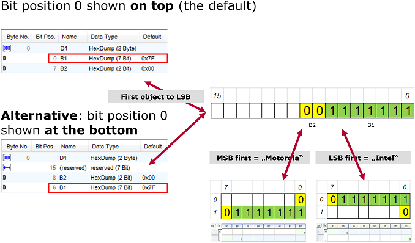
Bitfield with Bit 0 on Top or at the Bottom with Data Positions